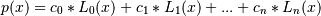

numpy.polynomial.laguerre.lagval¶
- numpy.polynomial.laguerre.lagval(x, c, tensor=True)[source]¶
Evaluate a Laguerre series at points x.
If c is of length n + 1, this function returns the value:

The parameter x is converted to an array only if it is a tuple or a list, otherwise it is treated as a scalar. In either case, either x or its elements must support multiplication and addition both with themselves and with the elements of c.
If c is a 1-D array, then p(x) will have the same shape as x. If c is multidimensional, then the shape of the result depends on the value of tensor. If tensor is true the shape will be c.shape[1:] + x.shape. If tensor is false the shape will be c.shape[1:]. Note that scalars have shape (,).
Trailing zeros in the coefficients will be used in the evaluation, so they should be avoided if efficiency is a concern.
Parameters : x : array_like, compatible object
If x is a list or tuple, it is converted to an ndarray, otherwise it is left unchanged and treated as a scalar. In either case, x or its elements must support addition and multiplication with with themselves and with the elements of c.
c : array_like
Array of coefficients ordered so that the coefficients for terms of degree n are contained in c[n]. If c is multidimensional the remaining indices enumerate multiple polynomials. In the two dimensional case the coefficients may be thought of as stored in the columns of c.
tensor : boolean, optional
If True, the shape of the coefficient array is extended with ones on the right, one for each dimension of x. Scalars have dimension 0 for this action. The result is that every column of coefficients in c is evaluated for every element of x. If False, x is broadcast over the columns of c for the evaluation. This keyword is useful when c is multidimensional. The default value is True.
New in version 1.7.0.
Returns : values : ndarray, algebra_like
The shape of the return value is described above.
Notes
The evaluation uses Clenshaw recursion, aka synthetic division.
Examples
>>> from numpy.polynomial.laguerre import lagval >>> coef = [1,2,3] >>> lagval(1, coef) -0.5 >>> lagval([[1,2],[3,4]], coef) array([[-0.5, -4. ], [-4.5, -2. ]])